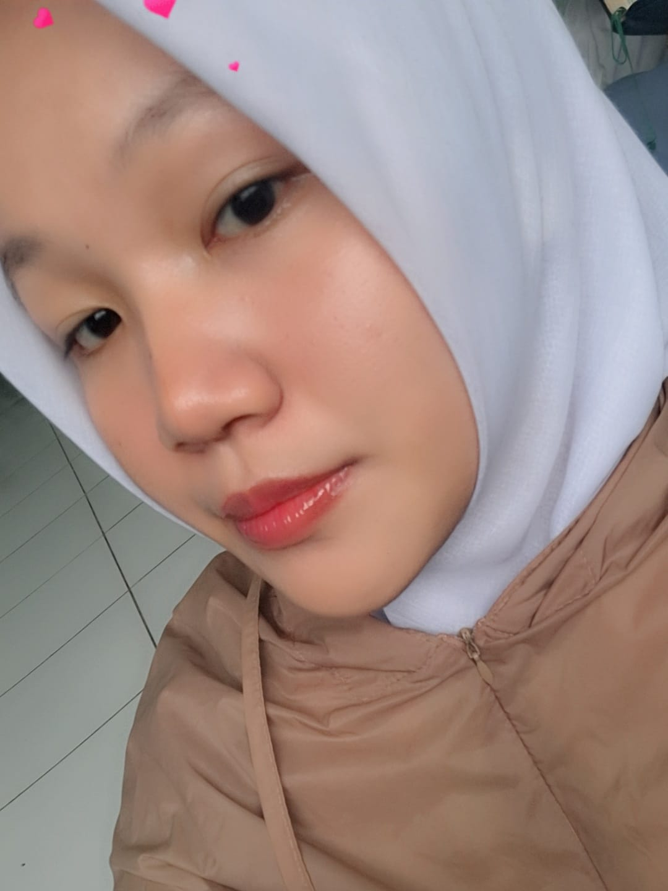

Klik foto untuk mengganti (maks 5MB)

Klik foto untuk mengganti (maks 5MB)
Mari berkenalan lebih dekat

Saya adalah siswi SMKS TI Annisa 2 jurusan Desain Komunikasi Visual. Memiliki ketelitian yang tinggi, kemampuan beradaptasi dengan baik, serta keterampilan komunikasi dan public speaking yang cukup baik. Saya juga memiliki pemahaman dalam bidang kewirausahaan, desain grafis, serta penguasaan perangkat lunak Adobe untuk mendukung proses kreatif dan efisiensi kerja.
Berpengalaman dalam merancang poster promosi, melaksanakan kegiatan promosi ke beberapa sekolah, serta menjalankan kegiatan penjualan baik secara langsung maupun daring. Terbiasa bekerja dengan banyak tugas sekaligus dengan perhatian tinggi terhadap detail.
Kemampuan dan perangkat yang saya kuasai
Karya dan proyek desain saya
Drag & drop foto di sini atau klik untuk browse
Format: JPG, PNG, GIF (Maks 10MB)Drag & drop video di sini atau klik untuk browse
Format: MP4, WebM, MOV (Maks 30 detik, 50MB)Deskripsi karya
Perjalanan dan pengalaman saya
Mengelola komunikasi organisasi serta mengoordinasikan penyampaian informasi kegiatan kepada anggota dan pihak terkait.
Berperan dalam perencanaan konsep kegiatan, penyusunan rundown serta mendukung kelancaran pelaksanaan acara.
Membantu menjaga ketertiban dan keamanan selama kegiatan berlangsung serta memastikan peserta mematuhi aturan.
Dipercaya memandu berbagai kegiatan sekolah dengan komunikasi yang interaktif sehingga menciptakan suasana acara yang hidup dan terstruktur.
Memimpin dan mengoordinasikan anggota dalam kegiatan kelompok serta membangun kerja sama dan kedisiplinan tim.
Berpartisipasi dalam kegiatan promosi sekolah dengan memperkenalkan program dan kegiatan sekolah kepada calon peserta didik di beberapa SMP.
Membuat berbagai desain poster promosi dan poster produk menggunakan software Adobe dengan hasil yang memperoleh penilaian baik. Membuat serta menjual produk secara online, termasuk merancang media promosi untuk pemasaran.
Hubungi saya untuk berkolaborasi
Tertarik untuk berkolaborasi atau ingin tahu lebih banyak tentang saya? Jangan ragu untuk menghubungi saya melalui kontak di bawah ini.
intanbelajar01@gmail.com
@ceceuf_
SMKS TI Annisa 2